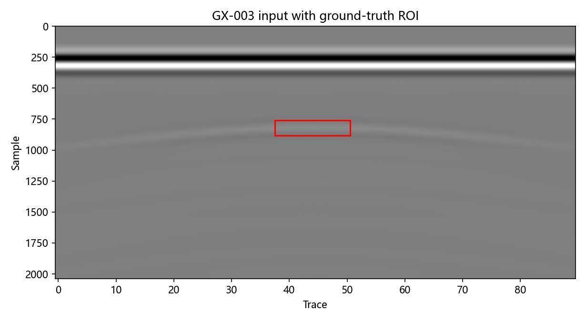
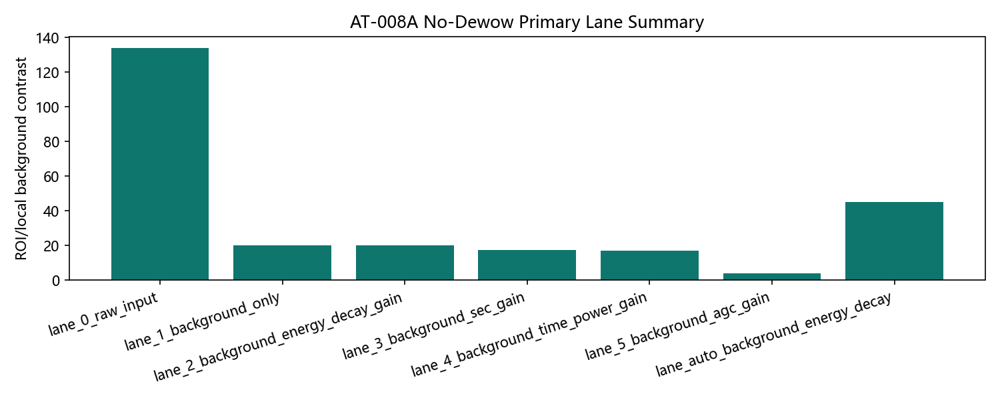
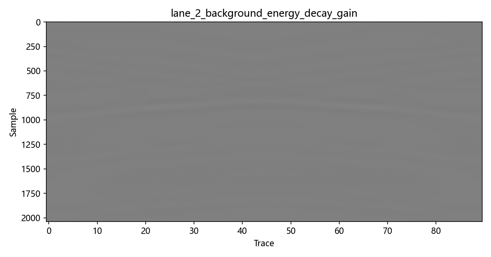
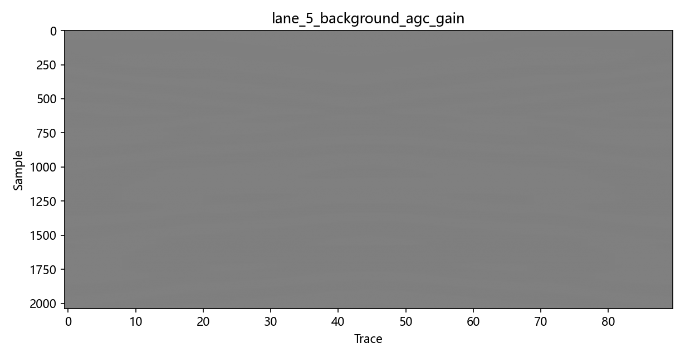
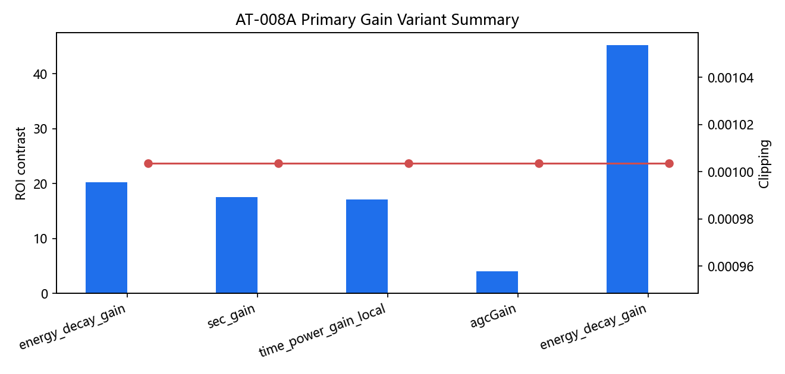
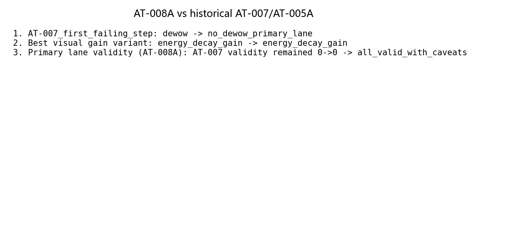

AT-008A No-Dewow Post-Fix Native Validation
Source commit:
b8cc89d3f026c858beab888cb3cbecd93192b723Dataset: pipe_demo_longline_v1 [2037, 90]
Zero-time policy:
excludedDewow policy:
excluded_primary_optional_diagnostic_side_lanesGround truth: GX-003 ROI used as-is.
Boundary: Primary AT-008A lane excludes both zero-time and dewow. Dewow side lanes are diagnostic only. AGC is display-oriented and non-amplitude-preserving.
Primary validity:
all_valid_with_caveatsBest gain variant:
energy_decay_gainAutoTune status:
improved_on_limited_contrast_metric_onlyKey figures






Lane summary table
| Lane | Branch | Dewow policy | Gain | ROI contrast | Clipping | Validity | Figure |
|---|---|---|---|---|---|---|---|
| lane_0_raw_input | raw | excluded_primary | none | 133.9 | 0.001004 | valid_with_caveats | figure |
| lane_1_background_only | manual | excluded_primary | none | 20.24 | 0.001004 | valid_with_caveats | figure |
| lane_2_background_energy_decay_gain | manual | excluded_primary | energy_decay_gain | 20.28 | 0.001004 | valid_with_caveats | figure |
| lane_3_background_sec_gain | manual | excluded_primary | sec_gain | 17.6 | 0.001004 | valid_with_caveats | figure |
| lane_4_background_time_power_gain | manual | excluded_primary | time_power_gain_local | 17.14 | 0.001004 | valid_with_caveats | figure |
| lane_5_background_agc_gain | manual | excluded_primary | agcGain | 4.025 | 0.001004 | valid_with_caveats | figure |
| lane_auto_background_energy_decay | auto_tuned | excluded_primary | energy_decay_gain | 45.25 | 0.001004 | valid_with_caveats | figure |
| lane_6_dewow256_background_energy_decay | diagnostic | fixed_diagnostic_window_256 | energy_decay_gain | 14.15 | 0.001004 | valid_with_caveats | figure |
| lane_7_dewow512_background_energy_decay | diagnostic | fixed_diagnostic_window_512 | energy_decay_gain | 19.93 | 0.001004 | valid_with_caveats | figure |
{kind=link}
{kind=link}
{kind=link}
{kind=link}
{kind=link}
{kind=link}
{kind=link}
{kind=link}
{kind=link}
Before / after comparison
| Comparison | Before | After | Interpretation |
|---|---|---|---|
| AT-007_first_failing_step | dewow | no_dewow_primary_lane | AT-007 first failing step was dewow; AT-008A primary lane excludes dewow. |
| Best visual gain variant | energy_decay_gain | energy_decay_gain | Cross-check against AT-005A no-zero-time benchmark. |
| Primary lane validity (AT-008A) | AT-007 validity remained 0->0 | all_valid_with_caveats | Checks whether no-dewow primary lanes avoid AT-007 failure mode. |
Known risks
- Single native gprMax scene remains insufficient for broad generalization.
- Dewow is excluded in the primary lane for this artifact; this is not a global dewow deprecation.
- AGC visual clarity cannot be treated as physical amplitude correctness.